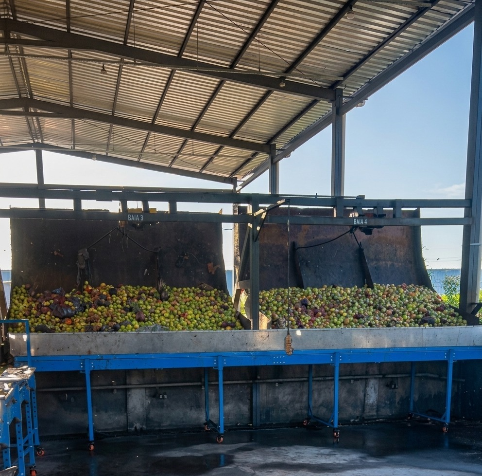
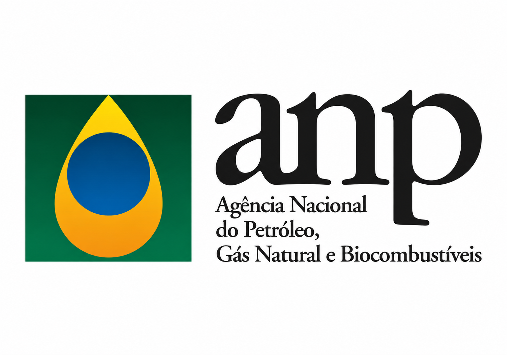

Um biodigestor industrial transforma resíduo orgânico em valor energético. Em um ambiente totalmente fechado e sem oxigênio, comunidades de microrganismos convertem matéria orgânica em biogás e biofertilizante, dois produtos centrais para projetos de descarbonização, eficiência operacional e geração de receita no agro e na indústria.
Na prática, um biodigestor industrial opera como uma usina biológica de alta precisão. A diferença para modelos rurais menores está na escala e no controle: uma planta industrial pode processar dezenas ou centenas de toneladas por dia, mantendo estabilidade microbiológica por meio do ajuste fino de temperatura, pH, agitação e tempo de retenção hidráulica.
O objetivo deste artigo é mostrar esse fluxo de forma organizada, do recebimento do resíduo até a saída de dois produtos finais: biogás com teor elevado de metano e digestato com valor agronômico.
O que é a digestão anaeróbia?
A digestão anaeróbia não é uma reação única. Ela acontece em sequência, com diferentes grupos de microrganismos atuando em etapas complementares até que a matéria orgânica seja convertida em energia e biofertilizante.
Hidrólise
É o momento da quebra inicial da matéria orgânica. Bactérias hidrolíticas liberam enzimas que fragmentam carboidratos, proteínas e lipídios em compostos menores e solúveis, como açúcares, aminoácidos e ácidos graxos.
Acidogênese
Os compostos gerados na hidrólise são fermentados e transformados em ácidos graxos voláteis (AGV), álcoois, CO₂ e H₂. É uma fase rápida e crítica: quando há acúmulo excessivo de AGV, o pH cai e o sistema perde estabilidade.
Acetogênese
Nessa etapa, os AGV são convertidos em acetato, hidrogênio e dióxido de carbono. Esses compostos funcionam como matéria-prima direta para a geração de metano; por isso, a estabilidade térmica do reator pesa bastante no desempenho.
Metanogênese
É a etapa final e mais sensível do processo. Arqueias metanogênicas convertem acetato e a combinação H₂/CO₂ em metano (CH₄), definindo a eficiência energética do biodigestor e a qualidade do biogás produzido.
Tipos de biodigestor industrial
Não existe um biodigestor universal. A escolha do reator depende do tipo de resíduo, da concentração de sólidos, da escala da operação e do nível de controle desejado no processo.
CSTR — Continuously Stirred Tank Reactor
É o modelo mais comum para resíduos com maior concentração de sólidos, geralmente na faixa de 8% a 12% de sólidos totais. Opera com agitação contínua, mecânica ou hidráulica, para manter o substrato homogêneo e melhorar o contato entre biomassa e matéria orgânica.
Tem boa versatilidade operacional e costuma oferecer estabilidade de processo, mas exige maior consumo energético para aquecimento e agitação.
Ideal para: dejetos de suínos e bovinos, resíduos frigoríficos e FORSU (fração orgânica de resíduos sólidos urbanos).
UASB — Upflow Anaerobic Sludge Blanket
É um reator de manta de lodo de fluxo ascendente, indicado para resíduos líquidos com baixa concentração de sólidos. Seu diferencial está na alta concentração de biomassa anaeróbia granular dentro do reator, o que permite boa eficiência com tempos de retenção hidráulica muito menores.
Em comparação com um CSTR, o UASB consegue operar com retenção na ordem de horas, não de semanas, desde que o efluente tenha perfil adequado.
Ideal para: vinhoto de cana-de-açúcar, efluentes de laticínios, cervejarias e indústrias processadoras de alimentos.
Plug Flow
Nesse formato, o material avança pelo reator de forma tubular, com fluxo próximo ao modelo pistão e pouca mistura longitudinal. Isso cria um percurso mais previsível entre entrada e saída do substrato.
É uma alternativa especialmente útil para resíduos fibrosos e com maior teor de sólidos, que tendem a dificultar a operação de sistemas com agitação convencional.
Ideal para: palha, bagaço de cana, silagem de milho e resíduos do processamento de grãos.
Biodigestor de Dois Estágios
Nesse arranjo, a hidrólise e a acidogênese acontecem em um reator, enquanto a metanogênese ocorre em outro. Isso permite ajustar pH, temperatura e dinâmica microbiológica de forma independente para cada fase.
A separação reduz inibições cruzadas, melhora a previsibilidade operacional e pode aumentar a eficiência global de conversão quando o resíduo é mais complexo.
Ideal para: projetos industriais com resíduos de alta complexidade, como substratos com muito teor de gordura, proteína ou lignina.
Parâmetros técnicos fundamentais
Em uma planta industrial, estabilidade operacional depende de monitoramento contínuo. Quando esses indicadores saem da faixa ideal, o efeito aparece rápido na produção de gás, na saúde microbiológica e no custo da operação.
| Parâmetro | Faixa ótima | Impacto operacional |
|---|---|---|
| TRH | 20–40 dias | Quando o tempo de retenção hidráulica fica baixo demais, a biomassa pode ser arrastada para fora do sistema. Quando fica alto demais, o projeto tende a exigir mais volume construído e mais capital investido. |
| pH | 6,8–7,4 | Abaixo de 6,5, as arqueias metanogênicas começam a ser inibidas. Acima de 8, o risco aumenta por toxicidade associada à amônia. |
| Temperatura mesofílica | 35–37°C | Mesmo oscilações relativamente pequenas, na faixa de ±2°C, já podem reduzir de forma relevante a taxa de metanogênese e comprometer a estabilidade do reator. |
| Temperatura termofílica | 50–55°C | Pode entregar maior produção específica, mas cobra o preço de menor robustez operacional e maior demanda energética para manter a condição térmica. |
| Relação C/N | 20–30:1 | Quando a relação cai abaixo de 15, cresce o risco de acúmulo de amônia. Quando sobe acima de 35, falta nitrogênio para sustentar adequadamente a atividade bacteriana. |
| Sólidos totais no CSTR | 8–12% | Acima de 15%, aparecem problemas de agitação e formação de crosta. Abaixo de 6%, o sistema tende a ficar diluído demais e o reator pode acabar subdimensionado em eficiência econômica. |
| AGV | < 500 mg/L | Quando os ácidos graxos voláteis passam de 1.500 mg/L, isso normalmente sinaliza sobrecarga orgânica e exige ajuste imediato na alimentação do reator. |
Quanto biogás uma planta gera?
A geração de biogás depende diretamente da composição bioquímica do substrato. Resíduos mais gordurosos tendem a oferecer maior potencial por unidade de matéria orgânica, mas também pedem mais cuidado operacional, retenção maior e pré-tratamento compatível.
| Substrato | Potencial de geração | Teor de metano |
|---|---|---|
| Dejetos bovinos | 0,25–0,40 Nm³/kg SV | CH₄: 55–60% |
| Dejetos suínos | 0,45–0,60 Nm³/kg SV | CH₄: 60–65% |
| Vinhoto de cana | 0,30–0,45 Nm³/kg DQO | CH₄: 62–68% |
| Resíduos alimentares | 0,50–0,80 Nm³/kg SV | CH₄: 60–68% |
| Gordura e óleo residual | 0,80–1,20 Nm³/kg SV | CH₄: 68–72% |
| Resíduos hortifrutigranjeiros | 0,40–0,55 Nm³/kg SV | CH₄: 58–63% |
Os produtos de um biodigestor
Um biodigestor bem estruturado não entrega só gás. Ele cria um portfólio de produtos energéticos, insumos agrícolas e receitas ambientais que podem melhorar bastante a viabilidade do projeto.
Biofertilizante
O digestato que sai do reator é rico em nitrogênio amoniacal, fósforo e potássio biodisponíveis. Quando bem caracterizado, pode substituir fertilizantes sintéticos, reduzir custo operacional e reforçar o posicionamento ESG da operação.

Para uso comercial ou estruturado, o material deve seguir requisitos técnicos e regulatórios, incluindo enquadramento conforme a Instrução Normativa MAPA 61/2020.
Biometano

Energia elétrica e térmica
Com motogeradores ou turbinas a gás, o biogás pode ser convertido em eletricidade para autoconsumo ou comercialização. O calor residual também pode ser recuperado e reutilizado no aquecimento do próprio reator.
Créditos de carbono
Projetos bem estruturados ainda podem capturar valor com CBIOs e créditos voluntários, pela redução de emissões de metano e pela substituição de combustíveis fósseis.

Em muitos casos, essa frente representa uma receita complementar relevante dentro do modelo do projeto.
Como dimensionar um biodigestor industrial?
Dimensionar um biodigestor industrial é um processo de engenharia. Ele começa com dados confiáveis do resíduo e evolui até a definição do reator e dos sistemas auxiliares que vão sustentar a operação.
Caracterização do resíduo
O ponto de partida são análises laboratoriais de sólidos totais, sólidos voláteis, DQO, nitrogênio Kjeldahl, fósforo total e pH. Sem essa base, qualquer dimensionamento vira aproximação frágil.
Ensaio BMP
O teste de potencial bioquímico de metano mede, em condição controlada, quanto metano aquele substrato realmente consegue gerar. Esse é um dos dados mais importantes para estimar volume de reator e expectativa de produção.
Definição de TRH e volume útil
Com base no BMP, na carga orgânica e na taxa de carregamento volumétrico, calcula-se o volume útil do reator. Em CSTR mesofílico para dejetos suínos, por exemplo, o TRH costuma ficar na faixa de 25 a 30 dias.
Escolha da tecnologia
Nessa fase entram as definições sobre tipo de reator, sistema de agitação, estratégia de aquecimento e solução construtiva da cobertura. Essas decisões afetam CAPEX, OPEX e estabilidade operacional.
Sistemas auxiliares
O projeto só fecha corretamente quando inclui pré-tratamento, upgrading, compressão, armazenagem e ponto de saída de energia. É essa integração que transforma o biodigestor em uma planta industrial viável.
Quer calcular o potencial do seu resíduo?
Nossa equipe faz um diagnóstico técnico gratuito: estimativa de geração de biogás, tipo de reator indicado e retorno do investimento.
Solicitar diagnóstico gratuito →


Vá além do artigo
A 4WaTT Academy reunirá trilhas técnicas para quem decide e quem opera projetos de biogás e biometano. Inscreva-se para acessar em primeira mão.
Entrar na lista de espera